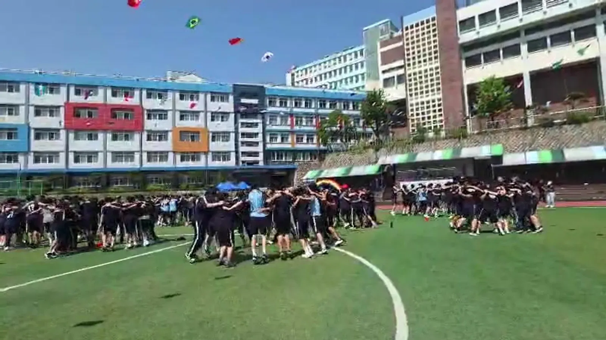
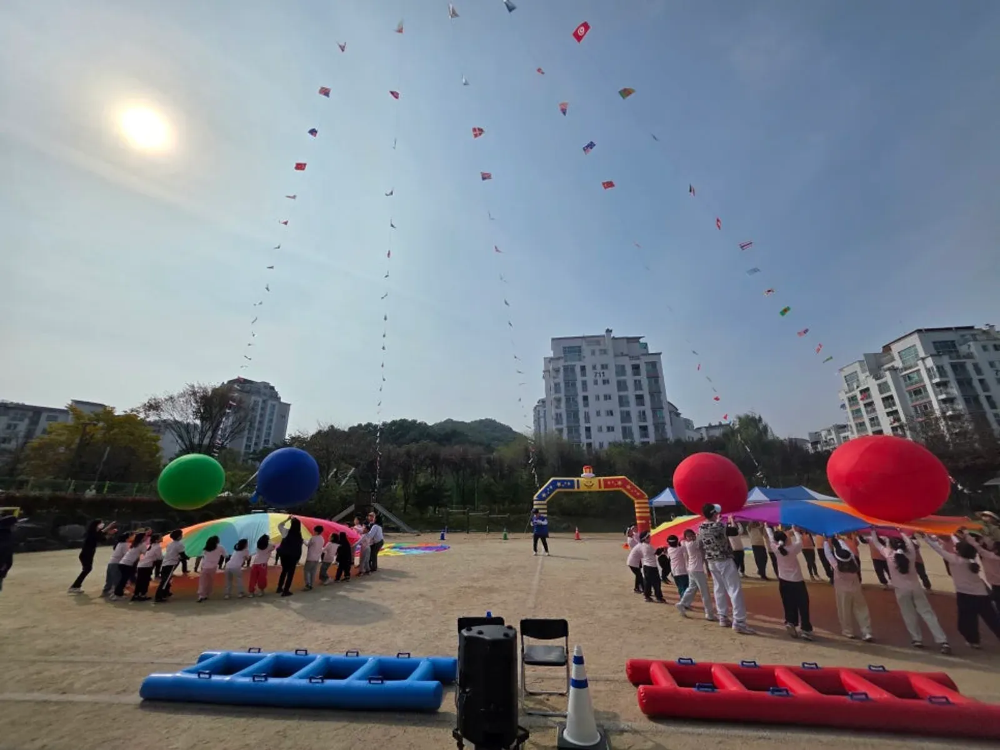
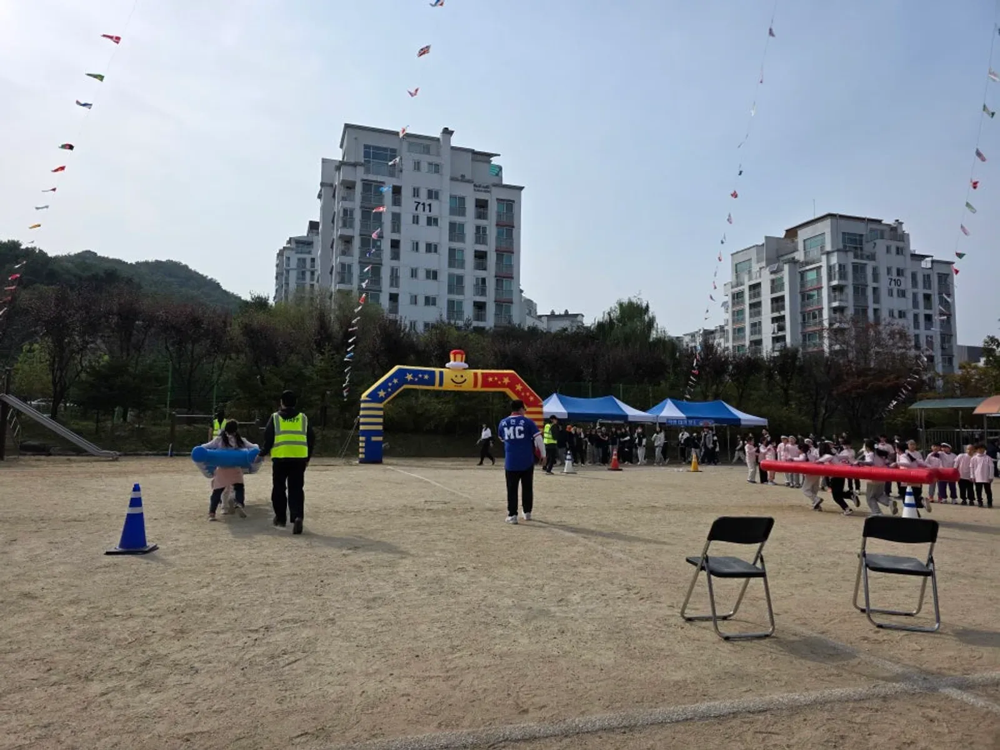

강북 행사 준비 · 2026년 10월 28일
강북 학교 체육대회 대동놀이, 중 · 고등학교 프로그램 짜는 법
강북 학교 체육대회 대동놀이를 준비하는 선생님께 먼저 드리는 답은 이렇습니다. 중 · 고등학생 체육대회는 반 대항으로 열기를 올리고, 승패 없는 참여 순서로 숨을 돌린 뒤, 모두가 한 원에 서는 대동놀이로 닫는 흐름이 잘 맞습니다.
이 글은 그 흐름을 어떻게 짜고, 운동장에서 어떻게 운영하며, 상담 때 무엇을 알려 주시면 되는지 순서대로 정리했습니다.

- 중 · 고등학생은 시작부터 큰 소리를 내기 쑥스러워하므로, 가벼운 구호로 열고 반 대항으로 열기를 올리는 순서가 무난합니다.
- 반 대항 종목 사이에 랜덤플레이 댄스 · 떼창 같은 승패 없는 순서를 넣으면 진 반도 끝까지 자리를 지키기 쉽습니다.
- 대동놀이는 어깨동무를 하고 원을 그리며 다 같이 움직이는 마무리 프로그램입니다.
- 상담 때는 학년 · 반 수 · 장소(운동장인지 체육관인지) · 맡길 범위를 먼저 알려 주시면 됩니다.
1. 강북 학교 체육대회, 선생님이 가장 고민하는 한 가지
중 · 고등학교 체육대회에서 선생님들이 가장 자주 하시는 고민은 종목이 아니라 분위기입니다. 이기는 반은 신나고 지는 반은 일찍 식어 버리는 일이 생기기 때문입니다.
그래서 프로그램을 짤 때는 경쟁 종목과 함께하는 순서를 번갈아 배치하고, 마지막 장면을 누가 이겼느냐가 아니라 다 같이 한 일로 남기는 쪽을 권합니다.
힐링엔터테인먼트는 노원 본사에서 강북구청까지 차로 약 5분 · 5.1km(막히지 않을 때) 거리입니다. 강북 안의 학교(수유동 · 미아동 · 번동 · 우이동 등)도 출퇴근 시간에는 더 걸릴 수 있어서, 당일에는 넉넉히 일찍 출발해 음향과 진행 준비를 마쳐 둡니다.
2. 상담 전에 알려 주시면 빨라지는 것들
같은 체육대회도 학년과 인원, 운동장이나 체육관 조건에 따라 구성이 크게 달라집니다. 아래 다섯 가지만 정리해 두셔도 첫 상담에서 초안이 거의 나옵니다.
| 알려 주실 것 | 이유 | 메모 |
|---|---|---|
| 학년 · 반 수 · 학생 수 | 반 대항 종목의 회차와 시간이 정해진다 | 반이 많으면 두세 반씩 묶어 겨루는 방식도 검토 |
| 장소 조건 | 운동장(흙 · 인조잔디)인지 체육관인지에 따라 종목과 음향이 달라진다 | 가능하면 장소 사진도 |
| 맡길 범위 | MC 진행만인지, 프로그램과 운영 물품까지인지 | 필요한 것만 맡겨도 된다 |
| 학교 일정 | 점심 · 하교 시간, 다른 학년 수업 여부 | 진행 시간이 종목 수를 정한다 |
| 학교가 가진 용품 | 줄다리기 줄 · 바통 · 콘 등 | 겹치지 않게 가져갈 도구를 맞춘다 |
체육관이나 강당처럼 실내라면 소리가 울리기 때문에 스피커 방향과 종목 규모를 함께 조정합니다.
우천 때 어디로 옮기는지, 날짜를 미룰 기준이 있는지도 학교 내부에서 먼저 정해 두시면 좋습니다.
3. 중 · 고등학교 체육대회 프로그램 흐름
중 · 고등학생은 처음부터 크게 소리 내기를 쑥스러워합니다. 시작은 반별로 모여 구호를 맞추는 정도로 가볍게 하는 편이 좋습니다.
열기가 오른 뒤에 반 대항 종목을 넣고, 중간에 한 번 승패 없는 순서로 풀어 준 다음, 후반 경기와 대동놀이로 이어 갑니다.
| 구간 | 구성 예 | 진행 포인트 |
|---|---|---|
| 여는 순서 | 반별 구호 · 몸풀기 | 짧게, 모두 일어서서 |
| 반 대항 1 | 단체 줄넘기 · 공 굴리기 릴레이 | 출발선 · 교대 위치를 표시 |
| 참여 순서 | 랜덤플레이 댄스 · 떼창 | 승패 없이 다 같이 |
| 반 대항 2 | 이어달리기 · 줄다리기 | 학년별 대기 위치 고정 |
| 마무리 | 대동놀이 · 시상 | 어깨동무로 원을 그리며 끝 |
표의 종목은 예시이고, 실제 구성은 학년 수와 운동장 크기, 진행 시간에 맞춰 바꿉니다.

사진은 초등학교 운동회 현장이지만, 경기 구역을 양쪽으로 나누고 스피커를 앞쪽에 두는 운동장 배치는 중 · 고등학교에도 참고가 됩니다.
여는 순서에서 학생들이 크게 소리 내지 않아도 괜찮습니다. 진행자가 먼저 가볍게 분위기를 만들고 학생들이 자연스럽게 따라오게 하는 것이 목표입니다.
4. 승패 없는 참여 순서가 필요한 이유
반 대항 종목만 이어지면 경기에 직접 나서지 않는 학생은 구경만 하게 됩니다. 그래서 중간에 랜덤플레이 댄스나 떼창처럼 전교생이 자리에서 바로 함께할 수 있는 순서를 끼워 넣습니다.
이런 순서는 점수와 상관이 없어서 지는 반도 부담 없이 참여하고, 다음 경기를 앞둔 대기 시간도 덜 지루해집니다.
- 경기에 나서지 않는 학생도 자리에서 참여할 수 있는 순서를 넣습니다.
- 승패가 갈리는 종목 바로 뒤에는 분위기를 풀어 주는 순서를 둡니다.
- 학년이 섞이는 순서는 학생 이동이 적게 들도록 위치를 먼저 정합니다.
선생님들이 함께 참여해 주시면 학생들 호응이 훨씬 좋아지니, 가능하시다면 이 순서만이라도 같이해 주세요.
5. 대동놀이로 닫는 체육대회, 운동장 운영 요령
「대동놀이」는 힐링엔터테인먼트의 시그니처 프로그램입니다. 반 대항 경기가 끝난 뒤 학생들이 어깨동무를 하고 원을 그리며 MC의 구령과 음악에 맞춰 함께 움직입니다.
이긴 반과 진 반이 한 원 안에서 섞이기 때문에, 체육대회의 마지막 장면이 점수가 아니라 함께한 시간으로 남습니다.
경기가 늘어지지 않으려면 진행자가 설명하는 동안 경기용품을 준비하고 학생 이동을 안내하는 역할을 따로 두어야 합니다. 반 대항 종목이 많을수록 대기 반과 경기 반이 섞이지 않게 자리를 정하는 것이 중요합니다.
- 반별 응원석을 운동장 둘레에 정하고 반 팻말을 세웁니다.
- 경기 중인 반은 경기 구역, 다음 반은 대기선에서 기다립니다.
- 출발 신호는 MC가, 용품 정리는 진행 보조 요원이 맡습니다.
- 점수판은 본부석 옆에 두고 종목마다 바로 발표합니다.
- 대동놀이를 위해 운동장 가운데를 비워 두고, 스피커는 운동장 양쪽에서 끝까지 소리가 닿게 둡니다.

6. 견적 문의는 이렇게 보내 주세요
자동 견적서에서 항목을 고르고 학교 이름 · 날짜 · 학생 수를 적어 보내 주시면 확인 후 견적을 안내드립니다. 금액은 행사마다 달라 견적서에 표시되지 않습니다.
| 항목 | 내용 |
|---|---|
| 학교 운동회 · 체육대회 | 기획 · 종목 구성 · 진행 |
| 대표 MC 이현호 진행 | 체육대회 전체 진행 |
| 대동놀이 · 참여 프로그램 | 전원이 함께하는 마무리 |
| 체육대회 게임도구 | 대형 공 · 대형 주사위 · 에어사다리 등 |
| 진행 보조 · 운영 스탭 | 경기 진행 · 이동 안내 |
| 음향 (대형) | 운동장 |
현장 사진은 학교 체육대회 대동놀이 이야기에, 강북 지역 안내는 강북 행사 안내에 있습니다.
초등학교 운동회라면 노원 초등학교 운동회 업체 글도 함께 참고해 주세요.
자주 묻는 질문
MC 진행만 맡겨도 되나요?
네. 종목과 용품은 학교에서 준비하시고 진행과 음향만 맡기셔도 됩니다.
상담 때 맡길 범위를 알려 주세요.
체육관에서도 대동놀이를 할 수 있나요?
체육관 크기에 맞춰 원의 크기와 동작을 바꿉니다. 실내는 소리가 울리므로 스피커 방향도 함께 맞춥니다.
학생 수가 많아 반 대항 종목이 오래 걸릴까 걱정됩니다.
반 수가 많으면 두세 반이 한 번에 겨루는 종목을 섞고, 결승만 따로 치르는 방식으로 시간을 줄일 수 있습니다. 학년별 대기 위치를 고정해 두면 반이 바뀌는 시간도 짧아집니다.
수학여행 레크리에이션도 하나요?
수학여행 · 청소년 레크리에이션도 하는 일에 있습니다. 떼창 · 랜덤플레이 댄스 같은 참여 순서를 숙소 · 행사장에 맞춰 짭니다.
행사 날짜가 정해지셨나요?
날짜 · 지역 · 인원 · 행사 종류만 알려 주시면 행사에 맞춰 상담 · 견적을 안내드립니다. 행사 중엔 통화가 어려우니 문자 · 카톡을 남겨 주세요.